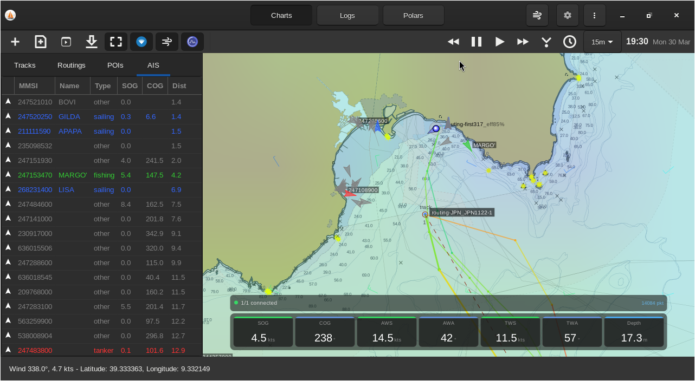

Sailworks: Open-source sailing routing and navigation#
Sailworks
Open-source sailing routing and navigation
Sailworks is an open-source sailing routing and navigation application written in Python with a Qt 6 interface.

Contributions
Contributions and issue reports are very welcome at the GitHub repository.